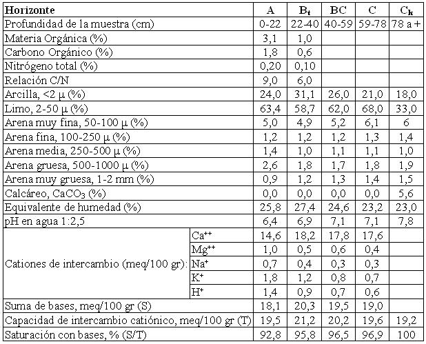

Argiustol típico, franca fina, mixta, térmica
Capacidad de uso: IIIc
Este suelo se ha desarrollado a partir de derrames distales muy suavemente inclinados hacia el Este, conformando pendientes regionales bastante homogéneas con gradientes menores al 0,5%. Son suelos bien drenados, con buena retención de humedad, se trabajan con facilidad y la limitación esencial es la climática de carácter moderada (régimen ústico de humedad de los suelos). El horizonte superficial tiene 22 cm de profundidad, es franco limoso, con 24% de arcillas y bloques moderados. Continúa hacia abajo el horizonte Bt enriquecido en arcillas iluviales que se extiende hasta 40 cm; tiene textura franco arcillo limosa, barnices comunes de arcilla y humus y estructura en prismas irregulares moderados. La transición, horizonte BC, continúa hacia abajo hasta la profundidad de 59 cm. El material parental del suelo es franco limoso, masivo, con carbonato de calcio en la masa del suelo a partir de los 78 cm.
Descripción del perfil típico:
El perfil representativo de la Serie Barranca Yaco fue descrito a 15 km al Norte de la ciudad de Jesús María, departamento Totoral, provincia de Córdoba.
A 0-22 cm; color en húmedo gris muy oscuro (10YR3/1); franco limoso; estructura en bloques subangulares medios moderados; friable en húmedo; ligeramente plástico; ligeramente adhesivo; pH 6,4; raíces abundantes; límite inferior claro, suave.
Bt 22-40 cm; color en húmedo pardo oscuro (10YR3/3); franco arcillo limoso; estructura en prismas irregulares medios moderados; friable en húmedo; plástico; adhesivo; pH 6,9; barnices comunes medios de arcilla y humus; raíces escasas; límite inferior gradual, suave.
BC 40-59 cm; color en húmedo pardo amarillento oscuro (10YR3/4); franco limoso; estructura en prismas y bloques débiles medios; friable en húmedo; ligeramente plástico; ligeramente adhesivo; pH 7,1; barnices arcillosos escasos; raíces escasas; límite inferior gradual.
C 59-78 cm; color en húmedo pardo oscuro a pardo (7,5YR4/4); franco limoso; masivo; friable; ligeramente plástico; ligeramente adhesivo; pH 7,1.
Ck 78 cm a +; color en húmedo pardo (7,5YR5/4); franco limosa; masivo; pH 8,2; violenta reacción al ClH en la masa del suelo.
Cuadro Nº8
Datos analíticos Serie BARRANCA YACO
Situación: Latitud: 30º52’S Longitud: 64º06’O Altitud: 575 m.s.n.m.

|